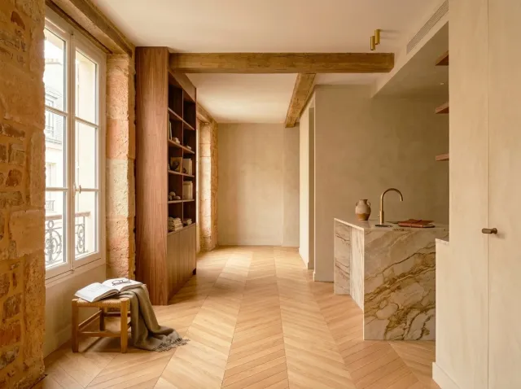
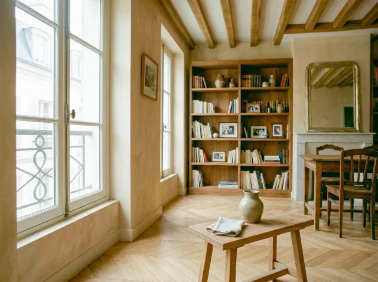

Maçonnerie d'intérieur
et ouverture de mur porteur
Ouvertures, dalles, reprises de structure et petite maçonnerie : la partie solide de la rénovation, qui conditionne tout le reste et se prépare avec sérieux.


Ouvertures, dalles, reprises de structure et petite maçonnerie : la partie solide de la rénovation, qui conditionne tout le reste et se prépare avec sérieux.
La maçonnerie est le premier métier d'un chantier de rénovation et le seul dont les erreurs ne se rattrapent pas avec de la peinture. Ouvrir un mur porteur, couler une dalle ou reprendre une structure ancienne demande de comprendre comment le bâtiment fonctionne, pas seulement de savoir démolir.
Nous réalisons des ouvertures dans les murs, des reprises de structure, des dalles béton, des cloisons maçonnées et de la petite maçonnerie : rebouchages, seuils, niches, réservations. Nous travaillons en lien avec le bureau d'études ou l'ingénieur de structure quand l'ouvrage touche à la stabilité.
La maçonnerie ouvre généralement un chantier de rénovation complète. Elle est suivie par la plomberie, l'électricité et les cloisons.
Ouvrir un mur porteur impose une étude de structure, un étaiement et la pose d'une poutre dimensionnée. L'ouvrage est contrôlé à chaque étape.
Dalle béton, chape de ragréage, mise à niveau : le sol est préparé avec la pente et l'épaisseur nécessaires avant la pose des revêtements.
Fissures, planchers affaissés, murs dégradés : nous diagnostiquons, étayons et reprenons les éléments porteurs avant de refermer.
Cloisons maçonnées, seuils, niches, réservations pour les réseaux : les ouvrages courants qui préparent le second œuvre.
Sur un ouvrage porteur, aucune étape ne se saute : l'étude précède l'étaiement, qui précède la démolition.
Nous examinons la nature du mur, du plancher et de la structure, les fissures éventuelles et les réseaux encastrés. C'est ce diagnostic qui décide de la méthode.
Pour un ouvrage porteur, une étude de structure dimensionne la poutre et les appuis. Le devis détaille la démolition, l'étaiement, la reprise et les finitions.
Protection des parties communes, étaiement, démolition contrôlée. Les gravats sont évacués au fur et à mesure.
Pose de la poutre ou du linteau, calage, reprise des appuis, et coulage de la dalle ou de la chape quand elle est prévue.
Rebouchage et mise en forme des tableaux d'ouverture, nettoyage, évacuation. Le chantier est remis aux autres métiers prêt à être cloisonné ou enduit.
Les fourchettes sont larges parce qu'une ouverture dans un mur porteur varie fortement selon la largeur, l'épaisseur du mur et la poutre nécessaire. Seule une visite permet de les resserrer.
| Prestation | Fourchette HT |
|---|---|
| Petite maçonnerie/ m² | 80 € – 180 € |
| Dalle béton/ m² | 80 € – 180 € |
| Ouverture de mur porteur/ unité | 2 000 € – 8 000 € |
| Reprise de structureforfait | 600 € – 5 000 € |
Une ouverture dans un mur porteur est un ouvrage réglementé, qui engage la sécurité de l'immeuble. Voici ce qu'il faut faire avant la première démolition.
Une étude établie par un bureau d'études ou un ingénieur dimensionne la poutre et ses appuis. Elle protège les occupants, et elle est souvent demandée par le syndic ou l'assureur.
En copropriété, toucher à un mur porteur nécessite l'accord de l'assemblée générale, car il fait partie de la structure de l'immeuble. Le lancer sans accord expose à des mises en demeure et à des travaux de remise en état.
Informer son assureur avant des travaux touchant à la structure évite les mauvaises surprises en cas de sinistre. Nos chantiers sont couverts par notre assurance décennale et notre responsabilité civile professionnelle.
Un mur peut cacher des gaines électriques, des conduites d'eau ou de gaz. Nous les repérons avant de démolir et les déplaçons avec les corps de métier concernés.
Deux intérieurs avec poutres et pierre apparentes. Retrouvez toutes nos réalisations.


Mur porteur, copropriété, étude de structure, durée : les réponses aux questions de maçonnerie les plus fréquentes.
Visite sur site et devis détaillé gratuits. Réponse sous 24h.